REL CREATIVE
Randy, Eleven & Leon
Who we are
We are a group of web development enthusiasts that share a common goal: to deliver an user experience with a good balance between intuitivity and fun. Following this development philosophy, we try to make our creations look simple on the outside and remain complex and intricate on the inside.
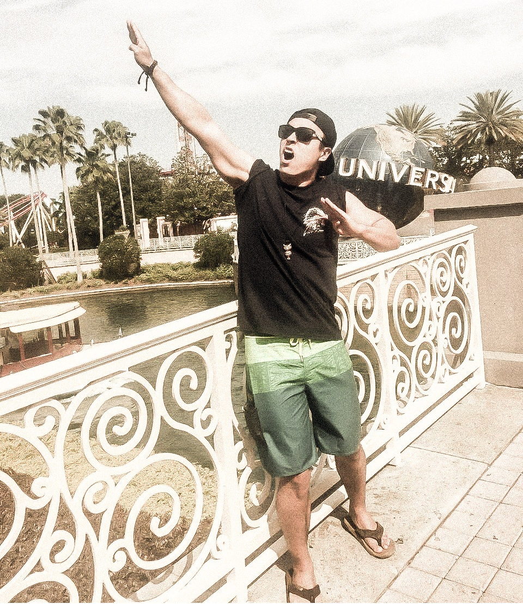
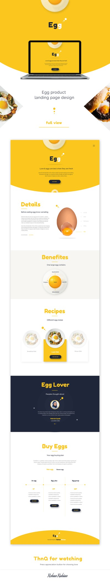
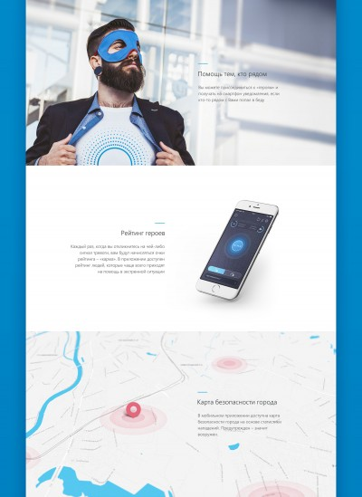
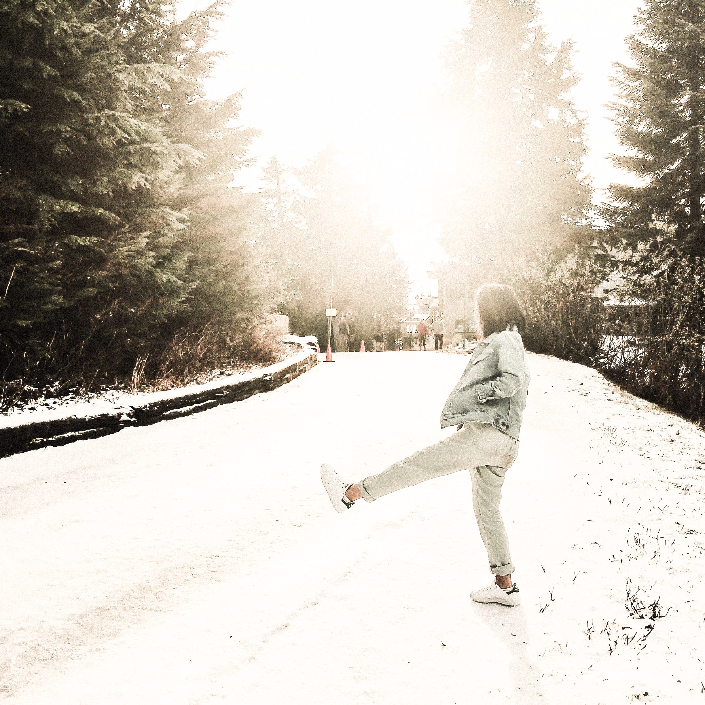
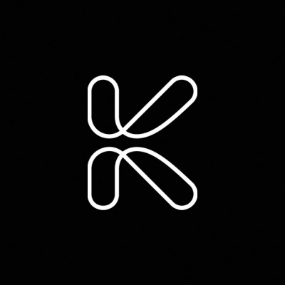
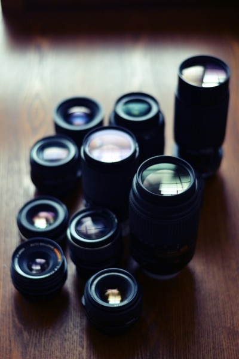
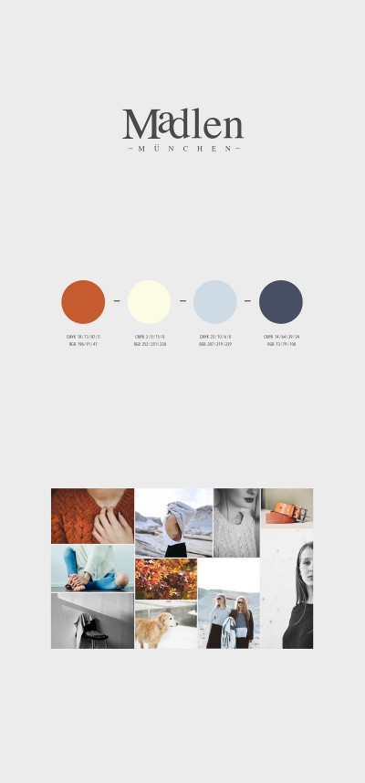
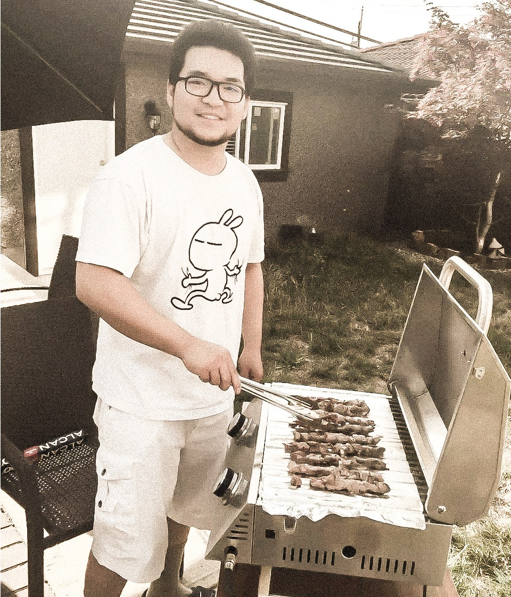
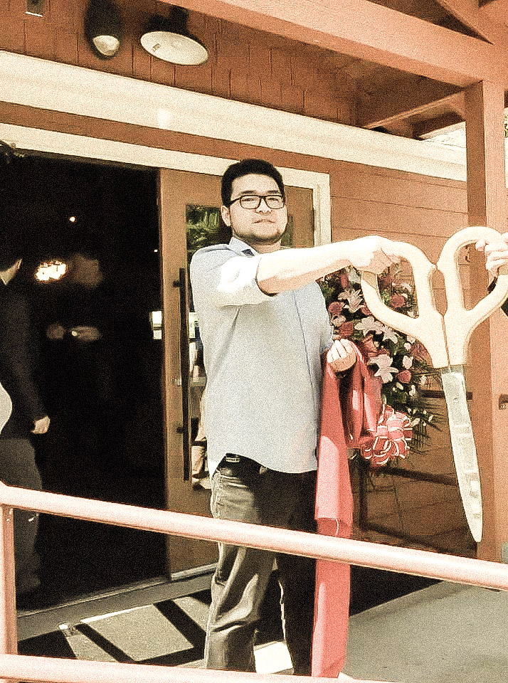
What we do
Study
All team members are either current university students or fresh graduates. Studying has always been and still is a major part of our lives.

Web develop
Our group is bond by our common interest in web development. We often meet in dev-home to discuss our new project ideas.
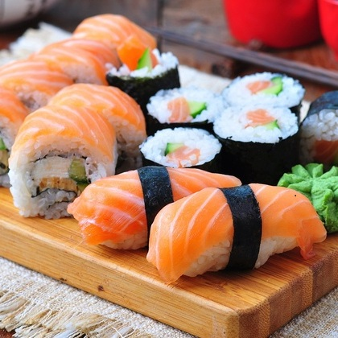
Eat
Each team member prefers different food. Randy likes lots of protein; Eleven is accustomed to spicy food; Leon likes to eat with people.
Team Members
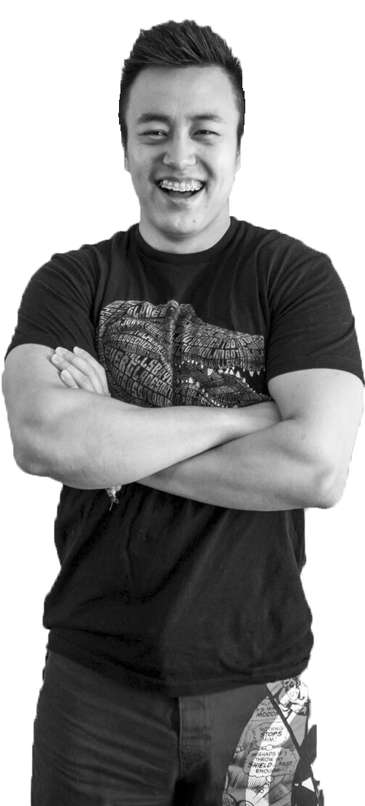
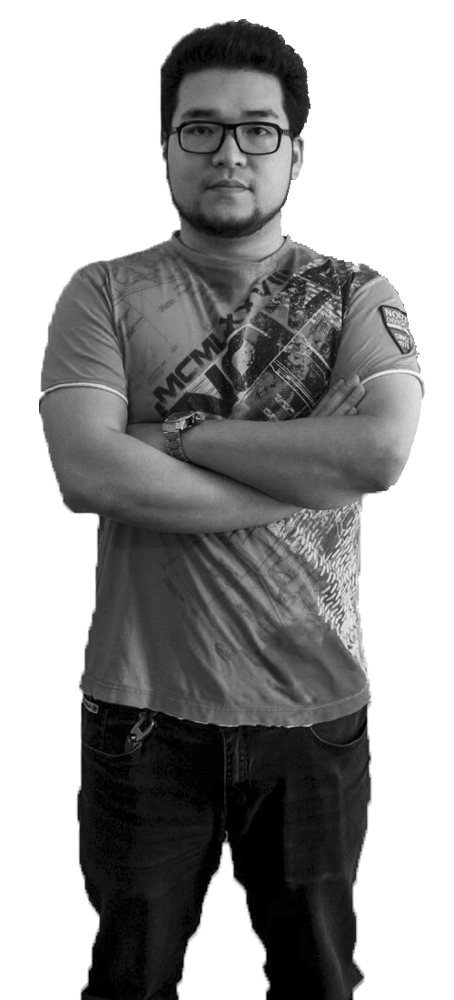